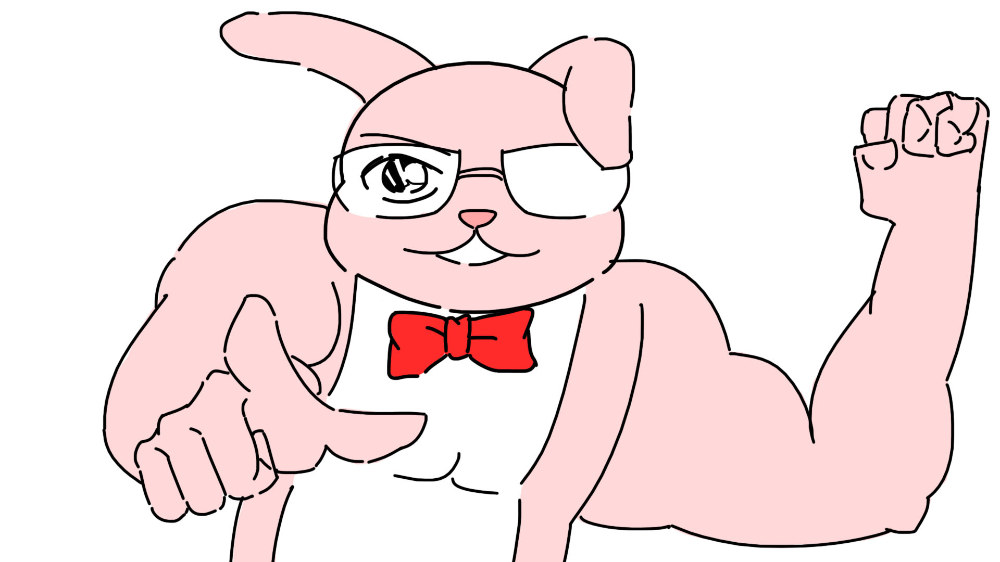

메인으로
자기소개서
1.성장환경
극히 평범하게 자라나 웃음 많은 아이로 자랐습니다.
모험심이 많아 번지점프나 짜릿한 경험을 좋아합니다.
2.생활패턴
현재는 '집밖은 위험해'를 시전하고 집밖을 안나가고 있지만
이젠 학교에 가고싶습니다. 학교가 가고싶어요...
3.앞으로 계획
저는 영상을 만드는 것을 좋아하고 외국어를 공부하는 것도 좋아합니다.
기회가 된다면 두가지 다 사용 할 수 있는 업종에서 일하고 싶습니다.
